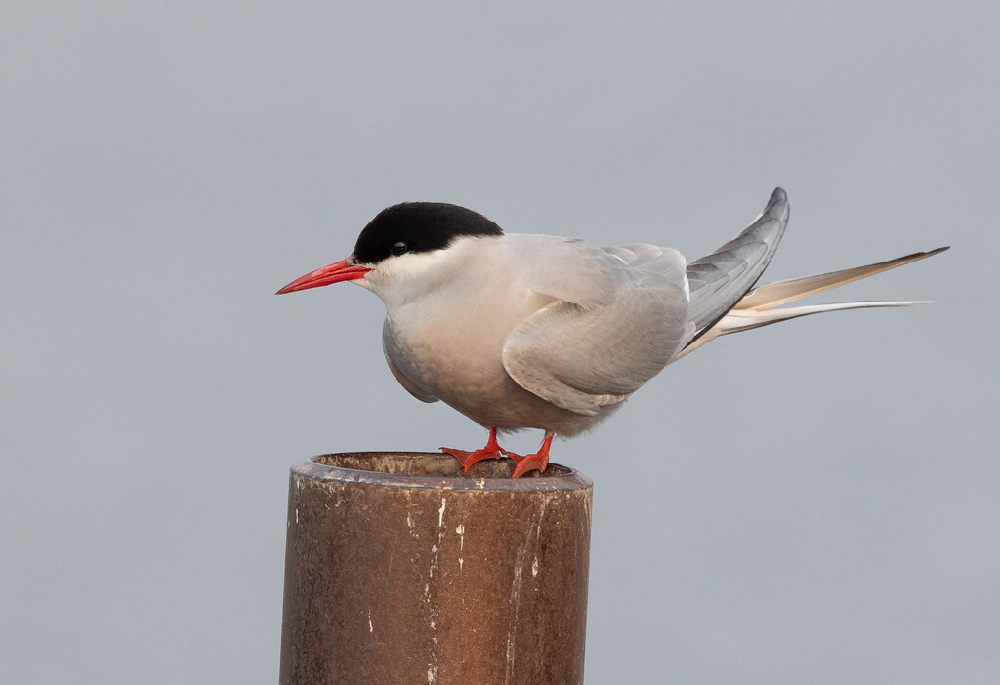

Welcome to the tern's world!
On the exterior, the Arctic tern is a relatively simple and typical bird.
They’re a “normal” size and have quite a few “normal”
characteristics — they mate for life and eat small fish and crustaceans.

However, there is much more to this bird than what meets the eye.
The Arctic tern has THE longest migration of any other living thing on Earth.
This long journey ensures that they see two summers every year
and more daylight than any other creature on the planet.